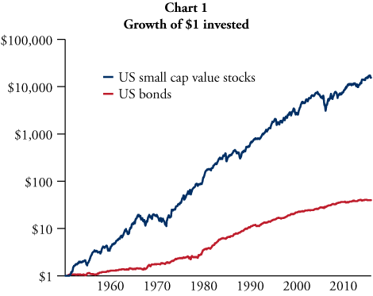
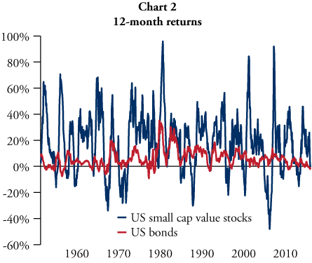
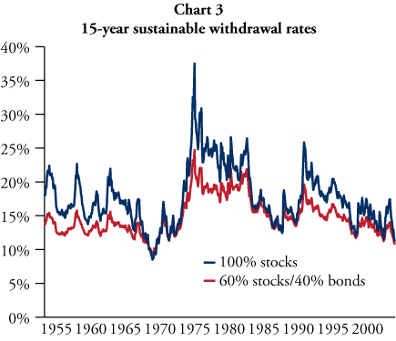

Should long-term investors hold bonds?
The conventional wisdom on Wall Street is that long-term investors should keep a significant portion of their portfolios in bonds. Putting all of one’s savings in a diversified portfolio of stocks is commonly viewed as too risky, since stocks are notoriously volatile investments. On the other hand, bonds tend to provide significantly lower returns than stocks. Does a substantial allocation to bonds really benefit investors in the long run?
First, it’s important to understand the main differences between stocks and bonds. Stocks, also called equities, represent ownership in a company. Shareholders are entitled to receive a portion of the company’s profits in the form of dividends. Bonds, also known as fixed income investments, represent loans made to corporate or governmental borrowers. Bondholders receive interest payments over the duration of the loan as well as a repayment of their original principal at maturity. It turns out that our capitalist system rewards owners significantly more than loaners.
Historically, stocks have provided significantly higher returns over the long run than bonds. As shown in Chart 1, over the past 65 years, US small cap value stocks have returned 15.9% per year on average, while US bonds returned only 5.8% per year.
Yet the strong long-term track record of stocks comes with a catch. Stocks generated a 15.9% annual return on average, but the returns over any given 12-month period fluctuated wildly, as shown in Chart 2. In some periods, stocks doubled in value, while in others, the value of stocks was cut in half! By comparison, bonds provided a much smoother ride. In the past 65 years, the worst decline bonds experienced in any 12-month period was a loss of only 9%.
The relative stability of bonds has led to a common belief that long-term investors should hold a significant portion of bonds in their portfolios, not because they provide superior returns, but rather to act as “shock absorbers” during short-term market declines. In the inevitable periods when stocks fall sharply in value, the bond portion will typically remain relatively stable. Adding a substantial allocation of bonds to the portfolio mix reduces the total volatility of the entire portfolio.
However, bonds also provide considerably lower returns in the long run. Adding bonds to the investment mix therefore reduces the expected return of the total portfolio, effectively imposing a cost on the investor. Bonds can help investors by functioning as portfolio “shock absorbers”, but do the long-term costs outweigh the potential short-term benefits?
Before we tackle that question, it’s important to note that long-term returns matter much more than short-term volatility to long-term investors. After all, it is an investment’s overall returns that allow investors to make withdrawals from their accounts and fund real-world spending. So what really matters to long-term investors is not how the value of their portfolio changes in a given 12-month period, but rather how much they can withdraw from their accounts over the long haul without running out of money. The measure of a portfolio’s ability to fund withdrawals over a given investment horizon is known as its sustainable withdrawal rate (SWR).
So to determine if a substantial allocation to bonds really benefits investors in the long run, we must ask, does including bonds in the portfolio improve its long-term SWR? Of course, we can’t predict the future, but we can use historical data to evaluate how stocks and bonds have performed in the past. Chart 3 compares the 15-year SWR for a portfolio of 100% US small cap value stocks with the same rate for a portfolio of 60% US small cap value stocks and 40% US bonds. The simulation is based on data from Fama and French, the Federal Reserve, and Bloomberg Indices.
It turns out that adding a substantial allocation of bonds to the portfolio only improved its SWR in 4% of the periods tested. That means adding bonds to the portfolio hurt its SWR an overwhelming 96% of the time.
In the few periods where bonds helped, they only modestly improved the SWR, never boosting it by more than 0.9%. But the allocation to bonds was far more likely to hurt the SWR, and overall, adding bonds resulted in a median decrease in the SWR of 2.7%. In other words, holding a substantial allocation of bonds would typically have caused investors to forego withdrawing 2 to 3% of their portfolio’s value per year, over the entire 15-year investment horizon. In our view, the expected cost of holding bonds is much too high to justify their potential benefit in very rare circumstances.
This cost-benefit analysis is even less favorable to holding bonds for investors with time horizons longer than 15 years. And whether they realize it or not, many investors do have significantly longer horizons. Based on Social Security life tables, a 65-year-old man married to a 60-year-old woman have a joint life expectancy of 27 years and 8 months. That is, at least one spouse is likely to still be living 27 years from now. And this is just the average expectation. In many cases, one spouse will live much longer than that. Today’s retirees need to invest their savings in order to fund their living expenses for at least three decades.
While bonds may be appropriate for investors with short time horizons or with other unique needs, we believe disciplined long-term investors who need continuing income from their savings should invest their capital in a diversified, multifactor portfolio of stocks without any substantial allocation to bonds. We understand this advice stands in stark contradiction to the conventional wisdom that currently prevails on Wall Street. Nevertheless, we believe the best evidence indicates that the long-term cost of holding bonds far outweighs its potential benefit in dampening short-term portfolio volatility.